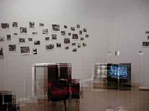
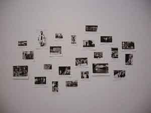
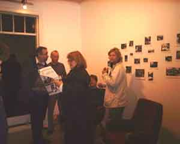

Þar – There – DortOpnun: Laugardaginn 15. desember 2001 klukkan 16.Sýningin stóð yfir frá 15. desember til 6. janúar 2002. Á sýningunni gefur að líta um 200 myndir með myndatextum. Myndirnar eru teknar úr dagblaðinu "Heilbronner Stimme" sem er gefið út í borginni Heilbronn í suðurhluta Þýskalands en myndatextarnir koma úr dagblaðinu "Degi" frá Akureyri sem hætti að koma út fyrr á árinu. Textar og myndir eru rifin úr samhengi og passa því ekki saman, þannig að ný tengsl myndast. Áhorfendur geta fundið út nýja þýðingu úr myndatextum sem virðast við fyrstu sýn vera á röngum stað og myndir birtast í nýju ljósi. Það sama gildir um 20 mínútna myndband sem Hlynur hefur sett saman. Þar gefur að líta fréttamyndir frá fréttaútsendingum frá CNN, Sky, BBC World, Stöð 2 og Ríkissjónvarpinu. Tal þulanna passar engan vegin við fréttamyndirnar og þar með er vanalegur máti hlustunar og sjónar áhorfandans raskað og við lesum myndirnar á nýjan hátt og leggjum annan skilning í tal fréttaþulanna. Tónlistarmaðurinn Pétur Eyvindsson gerði tónlist við myndbandið.Í verkum sínum rannsakar Hlynur gjarnan tengsl fólks með ólíkan bakgrunn og skoðar hvað það er sem tengir fólk eða sundrar því. Samskipti af öllum toga koma þar við sögu sem og samskiptaleysi.Sýningin var sett upp fyrr á árinu í "Kunstverein Heilbronn" í Þýskalandi og vakti þá mikla athygli. Hlynur gaf út sérstakt "dagblað" í tilefni sýningarinnar, þar sem einungis gefur að líta myndir og myndatexta en allur megintexti er felldur út. Myndatextarnir eru á þremur tungumálum, íslensku, þýsku og ensku sem liggja eins og rauður þráður í gegnum mörg verka Hlyns. Sýningargestir í Slúnkaríki geta tekið blaðið með sér heim en auk þess fengið sér sæti og flett öðrum blöðum, bæklingum og tímaritum milli þess sem myndir eru lesnar og textar Skoðaðir. Hlynur Hallsson er fæddur á Akureyri 1968, útskrifaðist frá MHÍ 1993 og stundaði framhaldsnám í myndlist í Þýskalandi. Hann hefur verið búsettur í Hannover í rúm átta ár en býr nú á Akureyri og í Hannover. Hann var tilnefndur menningaverðlana DV fyrir verk sitt "Dagbók/Veg(g)ir" á Kjarvalsstöðum og nýverið hlaut hann verðlaun ungra myndlistarmanna í Neðra Saxlandi sem veitt eru af menntamálaráðuneytinu þar. |
 |  |  |